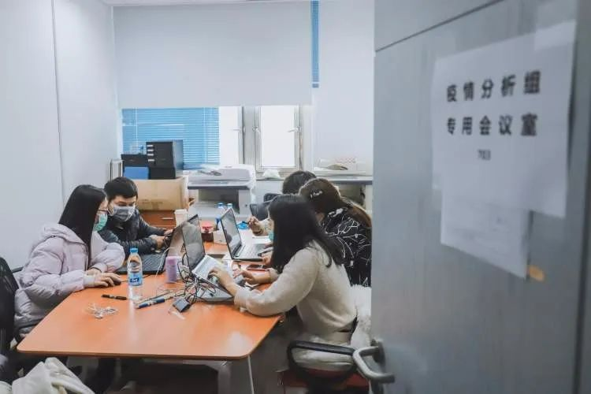
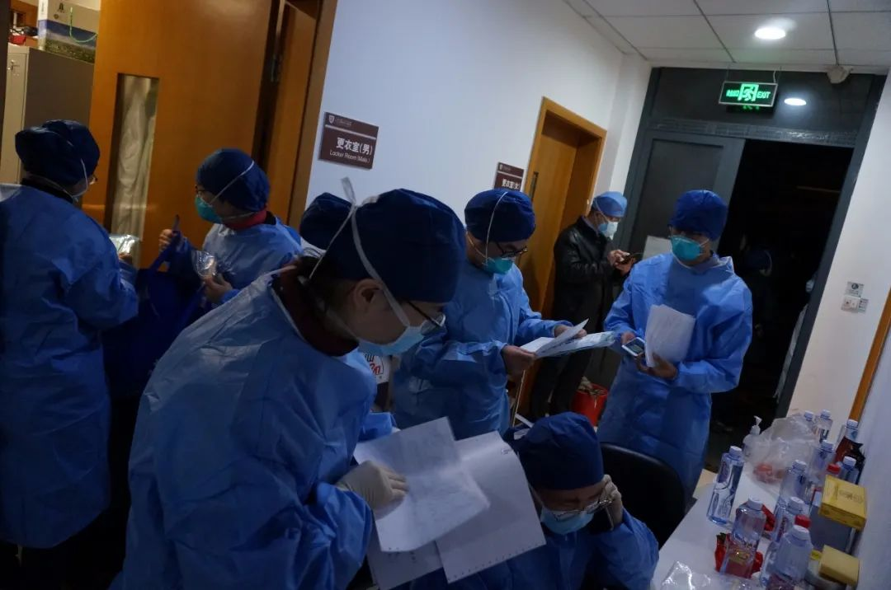

防医院内感染，是一场“苦战”——专访华山医院“医院感染管理科”主任杨帆教授
原文链接 备份链接 有时候半夜突然想到某个可能的漏洞，惊出一身冷汗。 记者 | 黄 祺 抗击新冠肺炎疫情的紧要关头，医院不能失守。 中国疾控中心2月17日的一份研究报告显示，全国已有3019名医务人员感染了新型冠状病毒，其中包括1716 …

很多时候，流调人员不像医生，患者会主动尽可能多地给医生提供有用信息。流调人员说，希望市民在经历过疫情之后，能够了解到流调的重要性，为他们将来的工作提供更多便利。
记者 | 应 琛
当大家对新冠肺炎“零号病人”议论纷纷之时，近日，上海的“一号病人”揭开了神秘的面纱。
经报道，1月16日傍晚5时，上海市疾控中心的电话响起。电话来自长宁区疾控中心，长宁区某医院，有一位武汉过来的病人，高度疑似新冠肺炎。
上海市疾病控制中心传染病防治所急传科的二位医师赶到医院的发热门诊后，一边等待核酸检测结果，一边开始了紧张的流调工作。让流调人员欣慰的是，上海第一位确诊病人非常配合，到了上海后没有去过其他地方，密切接触者只有女儿和女婿，到医院就诊也是女儿家里开车来的，没有涉及公共交通。
1月20日，经过国家复核确认了本市第一例新冠病人。
用上海市疾控中心新冠肺炎防控现场工作组副组长潘浩的话来说，流调的作用就是控制增量。

流调，即流行病学调查，就是通过抽丝剥茧式的调查询问，透过纷繁复杂的生活轨迹，探索传染的来龙去脉，将一个个看似毫不关联的片段，串成一条条紧密连接的传染链条，然后通过隔离传染源，切断传播途径等措施，保护易感人群。同时，流调也为判定病例的感染来源和密切接触者提供了依据。
凡是经医院初步认定的疑似患者，流调人员必须第一时间介入，即便最终发现是 “虚惊一场”。因此，有网友给流调员们取了一个酷酷的别称：猎毒者。
事实上，正是有了流调人员对上海2500多位疑似新冠肺炎病人进行的深入流调、调查，以及排摸可能感染的蛛丝马迹和传播方式，在第一时间隔离传染源、切断传播途径，尽可能控制了新冠病毒这个“星星之火”。
值得一提的是，在上海至今为止的330多例确诊病例中，有三分之一是在密切接触者中确诊。这也从侧面印证了流调的重要性，以及上海的防控是切实有效的。
帮助患者寻找回忆，补齐时间线
“我们的手机是24小时不能关的，随时待命准备去现场调查。轮到备班的晚上，更是不能深睡。半夜被电话惊醒的情况也不在少数。”1990年出生的马兆骧这样形容流调队员们的工作节奏。
马兆骧是静安区疾控中心急性传染病防治科的科员，此次疫情防控工作开展以后，身处急传科的他自然成为流调队第一梯队的成员。
“这次是我工作以来第一次经历的重大疫情，虽然平时工作也积累了些经验，但说实话心里还是有点紧张的。工作中，我会不停地提醒自己要细致，不要出错，也要在患者的面前展现出自己的专业性。”马兆骧告诉《新民周刊》记者，如果遇到棘手的问题，他也会及时向有经验的同事讨教。

静安区疾控中心工作人员在现场开展流调工作
某日17时左右，临近下班的马兆骧接到了区内某医院打来的电话，说接诊到一位新冠肺炎疑似病例。来不及吃饭的他立刻检查了一下流调装备——防护用品、流调表、采样试管、消毒用品等，便与同事赶往医院。
流调的目的是要回答“病人在哪里被谁或通过什么途径感染”“可能与其接触的密切接触者有哪些人”这两个关键问题。因此，调查中，流调人员要做到尽量细致。疑似患者发病前14天去过哪里、密切接触过哪些人、乘坐的交通工具的班次等，这些信息了解得能多详细就要多详细。
“但我当时碰到的这个上海老太太相当的自信，因为没有武汉旅行史，也没有相关接触史，觉得自己不会得病。在面对我们的流调时，很长时间是在抱怨，回答也是相当敷衍。”马兆骧回忆道，他只能一边安抚，一边尽可能梳理出有用的信息，“但第一次的交谈，其实不算太成功，得到的有用信息很少。只知道，她去过两家医院检查，还和女儿一家吃过年夜饭。”
马兆骧告诉记者，当他们联系老太太女儿时对方也是相当警惕，第一次电话，甚至连名字和地址都不愿告知，“她们电话会接，但就沉默不愿意多说。她女儿还很担心我们会上门，不想让邻居指指点点，说她们还要在这里住很长时间的”。

马兆骧在做电话流调
但第二天，老太太的检测结果呈阳性，她被确诊得了新冠肺炎。当老太太得知这一结果时，抱怨更多变成了担心。马兆骧在第二次与她沟通的时候，首先安抚了她的情绪，然后告诉她事情的严重性。这一次，老太太配合多了，说了两家外区医院的名字和当时看的科室。
“我们当时怀疑她在就医过程中感染的可能性很大，但后来经过市里的帮忙，我们把这个可能性排除了。”马兆骧说，为了找到老太太的感染源，他再一次给她打了电话。
由于时间太久，老太太很多细节都记不太清。马兆骧陪着她一天天的回忆，甚至精确到了几点几分。因此一次流调，通常花上两个小时都不算长。
终于，老太太回忆起，自己曾经有一次和女儿到过一个交易中心。“之后我们通过引导其女儿，进一步联系与患者交易的对方得知，当天与他们交易的对方是被确诊的病例。”马兆骧表示，这下总算弄清楚了老太太的感染来源，流调才算完成。
希望患者更多的配合
如果碰到记不清的患者还能慢慢引导回忆，那碰到有意隐瞒的患者，只能通过流调人员的观察和沟通来实现突破。
静安区疾控中心食品营养卫生科科长陈毅琼在此次疫情中是支援流调组的一员。在她碰到的案例中，她发现很多患者在讲述自己或者自己亲人的活动时，出于保护他们的目的，都会说得比较详细，“但一旦涉及到朋友，或远亲，出于各种顾虑，很多人就比较含糊”。
陈毅琼清楚地记得，她在做流调时碰到过一个刚退休的阿姨。阿姨在陈毅琼的引导下非常配合地讲述了自己的行动轨迹，但当陈毅琼追问她具体某几个空白的时间段时，阿姨就开始含糊其辞。

陈毅琼在做电话流调中
几经追问，再加上从阿姨儿子那里旁敲侧击，陈毅琼得知，阿姨原来是约了几个小姐妹聚餐。“这些小姐妹，可能有的也不是很熟悉，就是平时买菜或者跳广场舞认识的，所以阿姨比较顾忌。通过给阿姨做思想工作，我们终于得到了其中一个小姐妹的联系方式，又通过她，我们才对所有人完成了追踪。”陈毅琼表示。
在陈毅琼看来，拉家常是一个很快与对方熟络并获得信任的方式，在让对方回忆之前，她自己首先会回忆一遍那天的细节，“如果是下雨天，我会提醒对方，那天好像是下雨天，你有没有叫过外卖或者出门拿过快递。”

静安区疾控中心急性传染病防治科科长李恩国在审核信息
流调人员有自己的工作准则，更确切地说是使命。从接到医院通知一刻算起，第一时间要出具初次调查的报告，几乎没有商量的余地。因为晚一分钟，病毒便会在不具名的地方多“逍遥”一分钟。
很多时候，流调人员不像医生，患者会主动尽可能多地给医生提供有用信息。“而我们是被动去问，只有自己想得越多，流调时才能问得越细。”陈毅琼表示，也希望市民在经历过疫情之后，能够了解到流调的重要性，为他们将来的工作提供更多便利。

征集令
《新民周刊》现面向全国征集新冠肺炎采访对象和真实故事：
如果你是参与抗击新冠肺炎疫情的医护人员或其家属，我们希望聆听你的“战疫”故事，也希望传达你的诉求。
如果你是确诊、疑似患者本人或家属，我们希望了解你和家人如何“抗疫”的过程，让外界了解你的真实经历。
如果你是疫情严重地区的普通市民，我们希望展现你的乐观，并倾听你所需的帮助。
如果你是公共服务人员或各类捐助者，我们希望看到你的“最美逆行”，记录下你的无私。
……
抗击新冠肺炎疫情，我们诚征对疫情了解的社会各界人士，提供相关线索，说出你的故事，让我们用新闻留存这一切。
《新民周刊》新冠肺炎线索征集值班编辑联系方式（添加时请简要自我介绍）：
周一：应 琛 微信号：paulineying0127
周二：金 姬 微信号：gepetta
周三：黄 祺 微信号：shewen-2020
周四：周 洁 微信号：asyouasyou
周五：孔冰欣 微信号：kbx875055141
周六：吴 雪 微信号：shyshine1105
周日：姜浩峰 微信号：jianggeladandong
✳如你需要捐赠物资，可与以下两位工作人员联系:王勇：WangYong-SH 吴轶君：rommy150708（添加时请注明“捐物资”，方便工作人员快速通过您的申请，谢谢。）
新闻是历史的底稿，你们是历史的见证者。期待你的故事、你的线索！

▼
大家还都在看这些
▼
新民周刊所有平台稿件， 未经正式授权
一律不得转载、出版、改编或进行
与新民周刊版权相关的其他行为，违者必究


原文链接 备份链接 有时候半夜突然想到某个可能的漏洞，惊出一身冷汗。 记者 | 黄 祺 抗击新冠肺炎疫情的紧要关头，医院不能失守。 中国疾控中心2月17日的一份研究报告显示，全国已有3019名医务人员感染了新型冠状病毒，其中包括1716 …
原文链接 备份链接 从2月7日到现在，一方面大家的活动越来越丰富，另一方面由于轻症患者比较多，人们病情都慢慢恢复。所以，我看到每个人脸上的笑容都变多了。 口述 | 余 毅 整理 | 王仲昀 这一个月终于要过去了。 2月21日上午，在等待几 …
原文链接 备份链接 新冠肺炎疫情的防控正在逐步进入平稳轨道。全国31省市报告确诊病例在逐日减少，医院扩建、全民隔离，一部分患者也陆续出院。 这场前所未见的疫灾，让多少人体会了一次死里逃生。但与此同时，还有另一部分人，在依然严峻的寒冬冰封里 …
原文链接 备份链接 截至2月20日24时，全国有湖北、浙江、山东五所监狱发生了新冠肺炎感染疫情，这些均为输入性病例，确诊的505人中暂无死亡 图/Unsplash 文 |《财经》记者 王丽娜 俞琴 辛颖 黄姝静 编辑 | 鲁伟 截至2 …
原文链接 备份链接 整理 | 河 西 截至2020年2月22日12点，在这次疫情中，累计报告的死亡病例已经达到了2348人。 这些鲜活的生命，在一次突如其来的疫情中倒下了。他们中有普通人，也有院长、导演、院士、画家……很多都是各行各业中 …